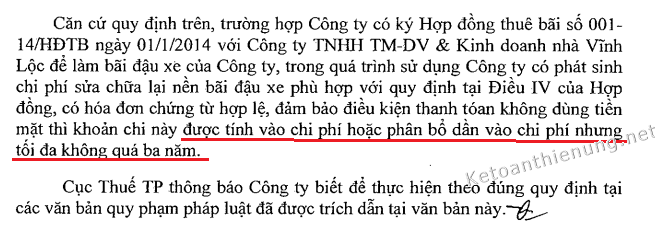

Hướng dẫn cách hạch toán chi phí sửa chữa nâng cấp TSCĐ như: Chi phí sửa chữa thường xuyên TSCĐ, chi phí sửa chữa lớn TSCĐ, chi phí đầu tư nâng cấp TSCĐ, chi phí sửa chữa TSCĐ đi thuê theo Thông tư 200 và 133 mới nhất hiện hành.
Quy định về nâng cấp, sửa chữa TSCĐ:
Theo điều 2 Thông tư 45/2013/TT-BTC:
"Sửa chữa tài sản cố định: là việc duy tu, bảo dưỡng, thay thế sửa chữa những hư hỏng phát sinh trong quá trình hoạt động nhằm khôi phục lại năng lực hoạt động theo trạng thái hoạt động tiêu chuẩn ban đầu của tài sản cố định.
Nâng cấp tài sản cố định: là hoạt động cải tạo, xây lắp, trang bị bổ sung thêm cho TSCĐ nhằm nâng cao công suất, chất lượng sản phẩm, tính năng tác dụng của TSCĐ so với mức ban đầu hoặc kéo dài thời gian sử dụng của TSCĐ; đưa vào áp dụng quy trình công nghệ sản xuất mới làm giảm chi phí hoạt động của TSCĐ so với trước."
------------------------------------------------------------------
Theo Điều 7 Thông tư Số 45/2013/TT-BTC của Bộ tài chính quy định:1. Các chi phí đầu tư nâng cấp TSCĐ được phản ánh tăng nguyên giá của TSCĐ đó, không được hạch toán các chi phí này vào chi phí sản xuất kinh doanh trong kỳ.
|
Ví dụ: Công ty Kế toán Diệu Tâm mua một tài sản cố định (mới 100%) với giá ghi trên hoá đơn là 119 triệu đồng, chiết khấu mua hàng là 5 triệu đồng, chi phí vận chuyển là 3 triệu đồng, chi phí lắp đặt, chạy thử là 3 triệu đồng. a. Biết rằng TSCĐ có tuổi thọ kỹ thuật là 12 năm, thời gian trích khấu hao của tài sản cố định doanh nghiệp dự kiến là 10 năm (phù hợp với quy định tại Phụ lục 1 ban hành kèm theo Thông tư số 45/2013/TT- BTC), tài sản được đưa vào sử dụng vào ngày 1/1/2013. - Nguyên giá tài sản cố định = 119 triệu - 5 triệu + 3 triệu + 3 triệu = 120 triệu đồng - Mức trích khấu hao trung bình hàng năm = 120 triệu : 10 năm =12 triệu đồng/năm. - Mức trích khấu hao trung bình hàng tháng = 12 triệu đồng: 12 tháng = 1 triệu đồng/ tháng - Hàng năm, doanh nghiệp trích 12 triệu đồng chi phí trích khấu hao tài sản cố định đó vào chi phí kinh doanh. b. Sau 5 năm sử dụng, doanh nghiệp nâng cấp TSCĐ với tổng chi phí là 30 triệu đồng, thời gian sử dụng được đánh giá lại là 6 năm (tăng 1 năm so với thời gian sử dụng đã đăng ký ban đầu), ngày hoàn thành đưa vào sử dụng là 1/1/2018. - Nguyên giá tài sản cố định = 120 triệu đồng + 30 triệu đồng = 150 triệu đồng - Số khấu hao luỹ kế đã trích = 12 triệu đồng (x) 5 năm = 60 triệu đồng - Giá trị còn lại trên sổ kế toán = 150 triệu đồng - 60 triệu đồng = 90 triệu đồng - Mức trích khấu hao trung bình hàng năm = 90 triệu đồng : 6 năm = 15 triệu đồng/ năm - Mức trích khấu hao trung bình hàng tháng = 15.000.000 đồng : 12 tháng =1.250.000 đồng/ tháng Từ năm 2018 trở đi, doanh nghiệp trích khấu hao vào chi phí kinh doanh mỗi tháng 1.250.000 đồng đối với tài sản cố định vừa được nâng cấp. |
2. Các chi phí sửa chữa TSCĐ không được tính tăng nguyên giá TSCĐ mà được hạch toán trực tiếp hoặc phân bổ dần vào chi phí kinh doanh trong kỳ, nhưng tối đa không quá 3 năm.
- Đối với những TSCĐ mà việc sửa chữa có tính chu kỳ thì doanh nghiệp được trích trước chi phí sửa chữa theo dự toán vào chi phí hàng năm. Nếu số thực chi sửa chữa tài sản cố định lớn hơn số trích theo dự toán thì doanh nghiệp được tính thêm vào chi phí hợp lý số chênh lệch này. Nếu số thực chi sửa chữa tài sản cố định nhỏ hơn số đã trích thì phần chênh lệch được hạch toán giảm chi phí kinh doanh trong kỳ.
3. Các chi phí liên quan đến TSCĐ vô hình phát sinh sau ghi nhận ban đầu được đánh giá một cách chắc chắn, làm tăng lợi ích kinh tế của TSCĐ vô hình so với mức hoạt động ban đầu, thì được phản ánh tăng nguyên giá TSCĐ. Các chi phí khác liên quan đến TSCĐ vô hình phát sinh sau ghi nhận ban đầu được hạch toán vào chi phí sản xuất kinh doanh."
-----------------------------------------------------------------------
Chi phí sửa chữa TSCĐ đi thuê:
Theo điều 8 Thông tư 45/2013/TT-BTC:
c) Trường hợp trong hợp đồng thuê tài sản (bao gồm cả thuê hoạt động và thuê tài chính) quy định bên đi thuê có trách nhiệm sửa chữa tài sản trong thời gian thuê thì chi phí sửa chữa TSCĐ đi thuê được phép hạch toán vào chi phí hoặc phân bổ dần vào chi phí kinh doanh nhưng thời gian tối đa không quá 3 năm.
Theo quy định tại khoản 2.16 Điều 4 Thông tư 96/2015/TT-BTC
"2.16. Phần chi phí thuê tài sản cố định vượt quá mức phân bổ theo số năm mà bên đi thuê trả tiền trước.
Ví dụ 10: Doanh nghiệp A thuê tài sản cố định trong 4 năm với số tiền thuê là: 400 triệu đồng và thanh toán một lần. Chi phí thuê tài sản cố định được hạch toán vào chi phí hàng năm là 100 triệu đồng. Chi phí thuê tài sản cố định hàng năm vượt trên 100 triệu đồng thì phần vượt trên 100 triệu đồng không được tính vào chi phí hợp lý khi xác định thu nhập chịu thuế.
Đối với chi phí sửa chữa tài sản cố định đi thuê mà trong hợp đồng thuê tài sản quy định bên đi thuê có trách nhiệm sửa chữa tài sản trong thời gian thuê thì chi phí sửa chữa tài sản cố định đi thuê được phép hạch toán vào chi phí hoặc phân bổ dần vào chi phí nhưng thời gian tối đa không quá 03 năm."
----------------------------------------------------------------------------------------
KẾT LUẬN:
- Chi phí nâng cấp TSCĐ -> Hạch toán tăng Nguyên giá TSCĐ
- Chi phí sửa chữa TSCĐ -> Hạch toán vào chi phí trong kỳ (không quá 3 năm)
- Chi phí sửa chữa TSCĐ đi thuê: -> Hạch toán vào chi phí trong kỳ (Không quá 3 năm)
---------------------------------------------------------------------------------------------
Cách hạch toán chi phí sửa chữa, nâng cấp TSCĐ:
- Công tác sửa chữa TSCĐ của doanh nghiệp cũng có thể tiến hành theo phương thức tự làm hoặc giao thầu.
a) Khi phát sinh chi phí cải tạo, nâng cấp, sửa chữa TSCĐ sẽ được tập hợp vào bên Nợ TK 241 "XDCB dở dang" (2413) và được chi tiết cho từng công trình, công việc sửa chữa TSCĐ. Căn cứ chứng từ phát sinh chi phí để hạch toán:
- Nếu thuế GTGT đầu vào được khấu trừ, ghi:
Nợ TK 241 - XDCB dở dang (2413) (giá mua chưa có thuế GTGT)
Nợ TK 133 - Thuế GTGT được khấu trừ (1332)
Có các TK 111, 112, 152, 214, 331... (tổng giá thanh toán).
- Nếu thuế GTGT đầu vào không được khấu trừ thì chi phí sửa chữa TSCĐ bao gồm cả thuế GTGT, ghi:
Nợ TK 241 - XDCB dở dang (2413) (tổng giá thanh toán)
Có các 111, 112, 152, 214, 334,... (tổng giá thanh toán).
b) Khi việc sửa chữa, cải tạo, nâng cấp TSCĐ hoàn thành:
- Nếu là khoản Chi phí Sửa chữa (không đủ điều kiện ghi tăng nguyên giá TSCĐ):
Nợ các TK 623, 627, 641, 642 (Nếu là sửa chữa nhỏ) (Theo TT 200)
Nợ TK 242 - Chi phí trả trước (Nếu sửa chữa lớn được phân bổ dần) (Theo TT 200 và 133)
Nợ TK 352 - Dự phòng phải trả (nếu trích trước chi phí sửa chữa định kỳ) (Theo TT 200 và 133)
Có TK 241 - XDCB dở dang (2413).
- Nếu là khoản cải tạo, nâng cấp (thỏa mãn điều kiện ghi tăng nguyên giá TSCĐ):
Nợ TK 211 - TSCĐ hữu hình
Có TK 241 - XDCB dở dang (2413).
Chú ý: Trường hợp sửa chữa thường xuyên TSCĐ thì không hạch toán vào tài khoản 2413 mà tính thẳng vào chi phí sản xuất, kinh doanh trong kỳ.
- Tài khoản 2413 Sửa chữa lớn TSCĐ: Phản ánh chi phí sửa chữa lớn TSCĐ và tình hình quyết toán chi phí sửa chữa lớn TSCĐ.
- Công tác sửa chữa TSCĐ của doanh nghiệp cũng có thể tiến hành theo phương thức tự làm hoặc giao thầu.
a) Khi phát sinh chi phí cải tạo, nâng cấp, sửa chữa TSCĐ sẽ được tập hợp vào bên Nợ TK 241 "XDCB dở dang" (2413) và được chi tiết cho từng công trình, công việc sửa chữa TSCĐ. Căn cứ chứng từ phát sinh chi phí để hạch toán:
- Nếu thuế GTGT đầu vào được khấu trừ, ghi:
Nợ TK 241 - XDCB dở dang (2413) (giá mua chưa có thuế GTGT)
Nợ TK 133 - Thuế GTGT được khấu trừ (1332)
Có các TK 111, 112, 152, 214, 331... (tổng giá thanh toán).
- Nếu thuế GTGT đầu vào không được khấu trừ thì chi phí sửa chữa TSCĐ bao gồm cả thuế GTGT, ghi:
Nợ TK 241 - XDCB dở dang (2413) (tổng giá thanh toán)
Có các 111, 112, 152, 214, 334,... (tổng giá thanh toán).
b) Khi việc sửa chữa, cải tạo, nâng cấp TSCĐ hoàn thành:
- Nếu là khoản Chi phí Sửa chữa (không đủ điều kiện ghi tăng nguyên giá TSCĐ):
Nợ các TK 623, 627, 641, 642 (Nếu là sửa chữa nhỏ) (Theo TT 200)
Nợ TK 242 - Chi phí trả trước (Nếu sửa chữa lớn được phân bổ dần) (Theo TT 200 và 133)
Nợ TK 352 - Dự phòng phải trả (nếu trích trước chi phí sửa chữa định kỳ) (Theo TT 200 và 133)
Có TK 241 - XDCB dở dang (2413).
- Nếu là khoản cải tạo, nâng cấp (thỏa mãn điều kiện ghi tăng nguyên giá TSCĐ):
Nợ TK 211 - TSCĐ hữu hình
Có TK 241 - XDCB dở dang (2413).
Chú ý: Trường hợp sửa chữa thường xuyên TSCĐ thì không hạch toán vào tài khoản 2413 mà tính thẳng vào chi phí sản xuất, kinh doanh trong kỳ.
- Tài khoản 2413 Sửa chữa lớn TSCĐ: Phản ánh chi phí sửa chữa lớn TSCĐ và tình hình quyết toán chi phí sửa chữa lớn TSCĐ.
Tức là: Những khoản chi phí sửa chữa thường xuyên (hoặc 1 lần giá trị nhỏ) TSCĐ hạch toán thẳng vào chi phí:
Nợ TK: 154, 627, 641, 642 ...
Nợ TK 133.
Có TK: 111, 112, 331 ...
Xem thêm: Cách xác định nguyên giá tài sản cố định
__________________________________________________
Quy định về Chi phí sửa chữa TSCĐ đi thuê:
Chi phí sửa chữa kho bãi đi thuê:
Công văn số 3694/CT-TTHT ngày 24/4/2017 của Cục Thuế TP. HCM:

-------------------------------------------------------------------------------------------
Chi phí sửa chữa văn phòng đi thuê:
Công văn số 47485/CT-TTHT ngày 9/7/2018 của Cục Thuế TP. Hà Nội:
"Căn cứ quy định trên, trường hợp Công ty có phát sinh các khoản chi phí cải tạo, sửa chữa văn phòng đi thuê phục vụ cho hoạt động sản xuất kinh doanh thì chi phí cải tạo, sửa chữa lại văn phòng được hạch toán vào chi phí hoặc phân bổ dần vào chi phí nhưng thời gian không quá 3 năm.
Thuế GTGT đầu vào của chi phí cải tạo, sửa chữa văn phòng đi thuê phục vụ sản xuất kinh doanh, Công ty được kê khai khấu trừ nếu đáp ứng điều kiện quy định tại Điều 15 Thông tư số 219/2013/TT-BTC , khoản 10 Điều 1 Thông tư số 26/2015/TT-BTC của Bộ Tài chính nêu trên."
-----------------------------------------------------------------------------------------------
Chi phí lắp đặt thiết bị văn phòng đi thuê:
Công văn số 4066/CT-TTHT ngày 5/5/2017 của Cục Thuế TP. HCM
“Trường hợp Công ty là đơn vị mới thành lập theo trình bày có thực hiện việc thiết kế, thi công, lắp đặt các hàng mục (như sàn gỗ, kính cường lực, tường thạch cao, hệ thống điện,...) cho văn phòng đi thuê của Công ty thì được phép hạch toán vào chi phí hoặc phân bổ dần vào chi phí kinh doanh nhưng thời gian tối đa không quá 3 năm.”
-------------------------------------------------------------------------------------------------------
Cách hạch toán chi phí sửa chữa TSCĐ đi thuê:
1, Nếu sửa chữa thường xuyên hoặc 1 lần giá trị nhỏ:
Nợ TK 154, 627, 641, 642
Nợ TK 133
Có 111, 112, 331...
2, Nếu chi phí sửa chữa TSCĐ đi thuê mà lớn (sữa chữa văn phòng, kho bãi, nhà xưởng …) Chi phí nguyên vật liệu, nhân công, chi phí khác…
Nợ TK 241 - XDCB dở dang (2413)
Nợ TK 133 - Thuế GTGT được khấu trừ (1332)
Có các TK 111, 112, 152, 331... (tổng giá thanh toán).
Khi việc sửa chữa TSCĐ hoàn thành:
Nợ TK 242 - Chi phí trả trước
Có TK 241
Hàng kỳ phân bổ vào chi phí:
Nợ TK 154, 627, 641, 642
Có TK 242
----------------------------------------------------------------------------------------
Xem thêm: Cách hạch toán khấu hao TSCĐ
Kế toán Diệu Tâm, chúc các bạn thành công!
-----------------------------------------------------------
-----------------------------------------------------------